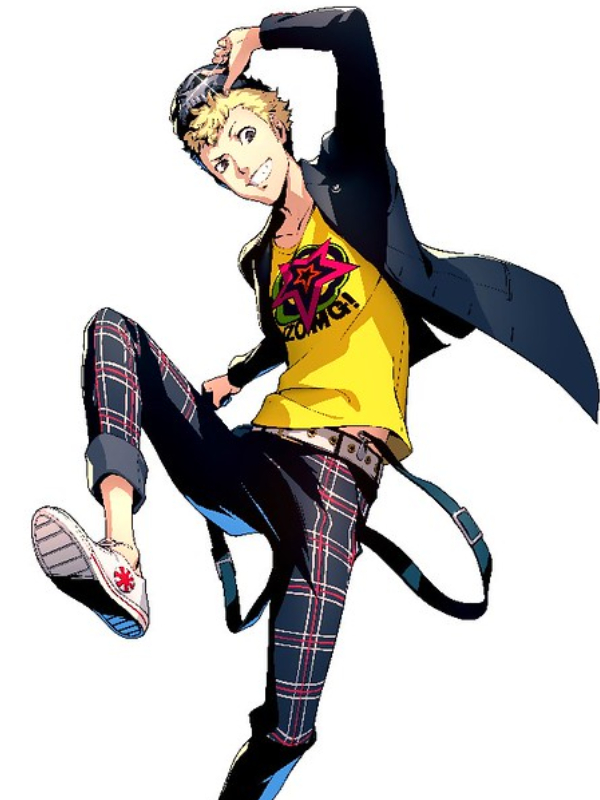

Phantom Thieves
- 
-

Joker
The protagonist of Persona 5 is a transfer student at Shujin Academy. At the beginning of the game, he has little to no power or influence in the world and is restrained by the rules of the system he was born into. As per tradition of the Megami Tensei franchise, he is a silent protagonist, whose personality is based on the player's actions and decisions.
Skull
Ryuji has short spiky dyed blond hair and dark brown eyes. According to Sadayo Kawakami, his hair is naturally black. He has a noticeable widow's peak and his eyebrows are unusual in that he lacks the outer sides. He is shown to be muscular.
Panther
Ann is a very kind and compassionate girl, enough for it to be noted by both Morgana and Sojiro Sakura. Years of isolation due to her looks have left her very withdrawn, with the belief that she's lost her place in the world. This hasn't stopped her from opening up to the people close to her and making jokes. She's able to press on without caring about the opinion of others due to her friendship with Shiho Suzui, who was her first real friend in Japan before joining the Phantom Thieves.
Fox
Yusuke has dark blue hair with parted bangs slightly covering his left eye and gray eyes. His in-game character model is noticeably taller and thinner than those of other male characters. His fellow Phantom Thieves Ann Takamaki and Ryuji Sakamoto both describe him as a "pretty boy" on seperate occasions.
Queen
Makoto has brown hair in a bob cut with blunt bangs and a French-braid styled headband that matches her hair color. Her eyes are abnormal as they have been depicted as red, although her eye color in her portraits can be interpreted as a reddish-brown. She is of average female height, being taller than Futaba Sakura and Haru Okumura, but slightly shorter than Ann Takamaki.
Oracle
Futaba is a young girl with hip length black hair dyed bright orange with straight-cut bangs and two long strands in the front along with a single small, thin strand at the top. Her brown eyes also seem to have some faint purple tones in them, appearing mauve. She wears large black circular glasses, and she is always seen wearing a set of AKG K845BT headphones with red earpads. She seems to be very short, even compared to other girls.
Noir
Haru is generally very shy and reserved. At school, she is viewed as eccentric due to her tendency to keep to herself and avoid contact with others as much as possible. She has serious trust issues, finding it difficult to differentiate between who truly values her as a friend, and who merely wants to use her for her family's status. This is due to her past, where not only friends, but adults and teachers would be kind at her just to please her father and smiled at her for their own personal gain.
Violet
"Kasumi" is a cheerful, elegant and friendly person with a seemingly perfect life, as she received a Shujin scholarship and was (supposedly) nearly uncontested in gymnastic competitions. She also appears to be quite clumsy and careless, as she is shown outright missing the mark at the batting cages even if her reflexes are usually excellent, and she lets her phone's battery run out while texting the protagonist.
Mona
Morgana is an amnesiac that remembers almost nothing about his past or himself, believing that the cause is the distortions within Mementos. This causes him to lose his sense of self in the process, and wishes to get it back. Despite his appearance of a mysterious cat-like creature, he believes to have been human. He theorizes the core of Mementos may have the answers.
Profiles
- Protagonist (Joker)
-
The protagonist is a second-year high school student who transfers to Shujin Academy in Tokyo, after a false assault charge issued by a high-profile politician, which caused him to end up with a one-year probation sentence. Prior to the incident, it is stated that he lived in a rural area. He lives in a coffee shop called Café Leblanc, located in Yongen-Jaya and owned by Sojiro Sakura, an acquaintance of his parents during his probation.
- Sakamoto Ryūji (Skull)
-
Ryuji Sakamoto is a student of Shujin Academy and has known Ann Takamaki since middle school, though they were only acquaintes. Ryuji borrowed money from Ann in middle school so he could buy a stuffed dolphin for his mom from a school trip, but never paid her back, which Ann holds against him.
- Ann Takamaki (Panther)
-
Ann is a second year high schooler at Shujin Academy. Ann is the classmate of the protagonist in 2-D, and she and Ryuji Sakamoto were classmates in middle school. Due to her foreign blood and living abroad before the story, she does not have many friends there and is considered an outcast in Shujin. According to the art book, her parents are away from home and she lives with "servants." Ann mentions she had a live-in caretaker, so these "servants" are likely caretakers. Both her parents are fashion designers who put on extravagant shows, and they jump from country to country, so Ann does not see them that often. It is revealed that Ann also used to live in Finland.
- Yusuke Kitagawa (Fox)
-
Yusuke is an honor student who takes an art course at Kosei High School. He was raised by Madarame as his mother died when he was three. Therefore, he does not remember her and Madarame took great care of him. As he grew up, he was tutored in art by Madarame, with his masterpiece "Sayuri" being one of his greatest inspirations for his artistic career. In reality, Madarame only raised Yusuke for the sole purpose of exhibiting his artwork using his name, and he would often give him meager rations during his tutelage. By the time the game begins, most other pupils in Madarame's shack are cast away, died because of direct or indirect abuse by him, left due to losing interest in art, and Yusuke is the last pupil living in his atelier.
- Niijima Makoto (Queen)
-
The Niijima sisters Makoto and Sae lived alongside their father since their mother died when they were young. As he was not home often, the sisters disliked him. Unfortunately, three years ago, he was murdered by being ran over by a truck in the line of duty, forcing the elder sister Sae to juggle between handling cases in court and raising Makoto alone. In order to retain the 99% indiction rate of her country's courts, Sae also more often than not, found herself having to rig cases with a guilty charge against her will. As a result, she saw both Makoto and their father as a burden and did not hold her in high regard. Makoto also regretted disliking her father and wished that he would still be around.
- Sakura Futaba (Oracle)
-
Futaba is the daughter of cognitive psientist Wakaba Isshiki; her father is unknown. Due to her high intelligence compared to other children around her, she was bullied often and barely had any friends other than a girl named Kana. However, Kana's parents were sexually harassing their daughter, and when Futaba discovered this, Kana left her as well.
- Haru Okumura (Noir)
-
Haru is a third year student in Shujin Academy and the daughter of the current president of Okumura Foods, Kunikazu Okumura. While Okumura used to genuinely care for his daughter, by the time the events of the game began, he had grown so corrupt and over-ambitious that he is willing to do anything he can do to gain absolute power. She didn't mind at first despite Okumura was overworking employees, but she eventually became a bargaining chip for his ambitions, in which she has been forced into an arranged marriage with the son of a prospective associate of her father's, Sugimura for the sole reason that his status will allow Okumura to achieve presidency.
- Sumire Yoshizawa (Violet)
-
The Yoshizawa sisters, Kasumi and Sumire, lived alongside their father Shinichi Yoshizawa, the director of the talk show where Goro Akechi was first met. Aside of him, they also lived alongside their mother and grandmother. Both sisters, training to be gymnasts, were on good terms with each other and shared the same coach, Hiraguchi. Kasumi was a quick learner, but Sumire had trouble remembering most of her moves. However, her coach rewarded the sisters with ice cream for good performances, which Kasumi would always share with her no matter what. Kasumi also arranges most of the sisters' daily life, including Sumire's bedroom, with the exception of preparing dishes, since compared to Sumire, she was a mediocre cook. Eventually, both sisters promised to go to internationals as a sister duo.
- Morgana (Mona)
-
Morgana is an amnesiac that remembers almost nothing about his past or himself, believing that the cause is the distortions within Mementos. This causes him to lose his sense of self in the process, and wishes to get it back. Despite his appearance of a mysterious cat-like creature, he believes himself to have been human. He theorizes the core of Mementos may have the answers, but access from most of it is blocked and he cannot go very deep.
Popularity Poll
Playstation Japan popularity poll on Twitter (September 15, 2021)